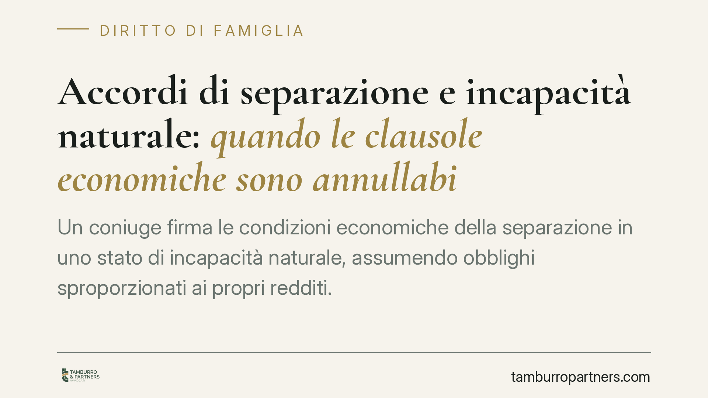

Accordi di separazione e incapacità naturale: quando le clausole economiche sono annullabili
Un coniuge firma le condizioni economiche della separazione in uno stato di incapacità naturale, assumendo obblighi sproporzionati ai propri redditi. La giurisprudenza riconosce che quelle clausole possono essere annullate, ferma restando la validità dell'accordo sullo stato di separazione. Analizziamo presupposti, limiti temporali dell'azione e la posizione autonoma dei figli minori.

Il caso tipo
Un coniuge sottoscrive un accordo di separazione consensuale accettando un assegno di mantenimento del tutto sproporzionato rispetto ai propri redditi effettivi. Successivamente emerge che, al momento della firma, quel coniuge si trovava in uno stato di incapacità naturale: una condizione transitoria o permanente che, pur in assenza di interdizione o amministrazione di sostegno, lo privava della capacità di comprendere e volere.
La questione giuridica è una sola: quell'impegno economico è stato assunto in modo libero e consapevole? Occorre distinguere con nettezza due piani che spesso vengono confusi. Un conto è chiedere di modificare un patto valido perché sono mutate le circostanze; altro conto è accertare che quel patto non è mai stato validamente assunto. Nel secondo caso non si rivedono le condizioni per il futuro: si rimuove a monte un vincolo viziato.
Inquadramento normativo
Il rimedio applicabile è l'annullabilità, non la nullità. La differenza non è di stile: la nullità colpisce atti radicalmente invalidi e può essere fatta valere senza limiti di tempo; l'annullabilità presuppone un vizio che rende l'atto efficace finché non viene impugnato entro un termine preciso.
L'art. 428 c.c. disciplina gli atti compiuti da persona incapace di intendere o di volere. Per i contratti – categoria cui sono riconducibili le clausole economiche pattizie della separazione – il secondo comma rinvia alla disciplina generale e richiede, oltre all'incapacità al momento dell'atto, un presupposto ulteriore: la malafede dell'altro contraente oppure, secondo la lettura prevalente, il grave pregiudizio per l'incapace. Non basta, quindi, dimostrare di aver firmato in condizione di incapacità: occorre il requisito aggiuntivo.
Sul piano generale, l'art. 1425 c.c. qualifica come annullabile il contratto concluso da persona incapace di intendere o di volere. L'art. 1442 c.c. fissa il termine di prescrizione dell'azione di annullamento in cinque anni, decorrenti – per l'incapacità – dal giorno in cui è cessato lo stato che ha viziato il consenso. Il profilo temporale è decisivo: trascorso il quinquennio, il rimedio non è più azionabile.
La posizione dei figli minori
Un aspetto va tenuto rigorosamente separato. L'eventuale annullamento delle clausole economiche concordate tra i coniugi non travolge le statuizioni a tutela dei figli minori. Il contributo al mantenimento dei figli non è disponibile dalle parti nello stesso modo di un assegno tra coniugi: risponde a un interesse del minore che il giudice valuta in modo autonomo. Un vizio del consenso di un genitore non può ricadere a danno dei figli, i cui provvedimenti restano modificabili secondo i parametri loro propri.
Implicazioni pratiche
Per il coniuge obbligato che abbia firmato in condizioni di incapacità, il percorso non è la richiesta di revisione per sopravvenienze, bensì l'azione di annullamento delle sole clausole economiche. Va però messo in conto l'onere probatorio: dimostrare lo stato di incapacità al momento esatto della firma e, per i contratti, il requisito aggiuntivo richiesto dall'art. 428, secondo comma, c.c.
Per il coniuge beneficiario, l'accertamento dell'incapacità e dell'eventuale malafede può condurre alla caducazione del titolo economico e al ricalcolo dell'assegno su base proporzionale ai redditi reali.
Sul piano processuale, la modifica delle condizioni della separazione è oggi inquadrata nel rito unificato in materia di persone, minorenni e famiglie introdotto dalla riforma Cartabia (artt. 473-bis e seguenti c.p.c.), che ha assorbito i procedimenti in precedenza regolati dall'art. 710 c.p.c. L'azione di annullamento del patto, invece, segue le regole proprie dell'impugnativa negoziale.
Cosa fare in concreto
- Conservare la documentazione sanitaria relativa al periodo della sottoscrizione: cartelle cliniche, certificazioni, terapie in corso, perizie. È la prova centrale dello stato di incapacità al momento dell'atto.
- Verificare la tempestività: l'azione di annullamento si prescrive in cinque anni (art. 1442 c.c.), decorrenti dalla cessazione dello stato di incapacità. Agire prima che il termine maturi.
- Documentare la sproporzione tra l'impegno assunto e i redditi reali, per sostenere il requisito del grave pregiudizio.
- Trattare separatamente la posizione dei figli minori, i cui provvedimenti restano autonomi rispetto all'accordo tra coniugi.
- Raccogliere elementi sulla condotta dell'altra parte al momento della firma, rilevanti ai fini della malafede ex art. 428, secondo comma, c.c.
Una riflessione conclusiva
Alla base di ogni accordo di separazione c'è un presupposto che non ammette eccezioni: la volontà deve essere libera e consapevole. Quando questa manca, il problema non è adeguare un patto alle nuove circostanze, ma riconoscere che quel patto non poteva nascere validamente. Distinguere i due piani è la premessa di qualsiasi strategia difensiva corretta.
---
Contributo informativo a cura di Tamburro & Partners - Avv. Giuseppe Tamburro. Non costituisce parere legale.
Ogni famiglia ha il suo equilibrio.
Separazione, divorzio, affidamento, assegno: se vuoi un confronto riservato su una specifica situazione, scrivi allo studio. Ti rispondiamo entro un giorno lavorativo.